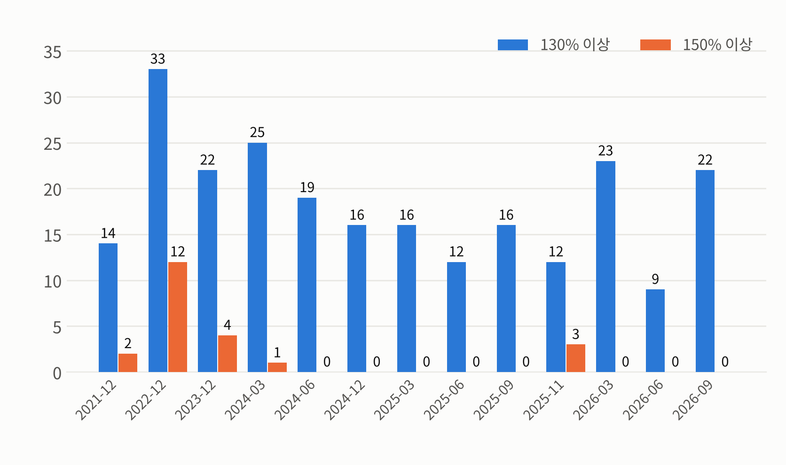
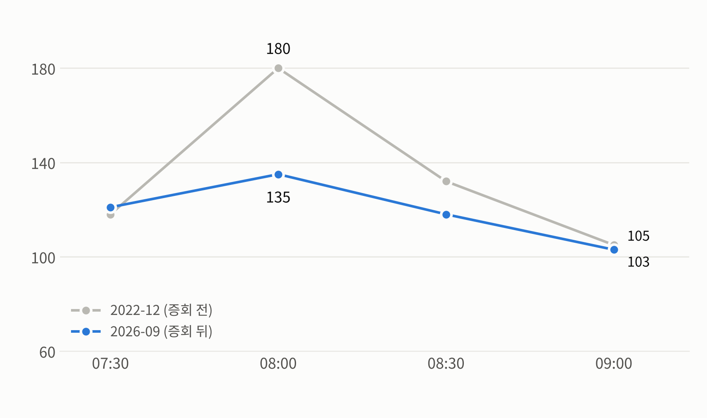
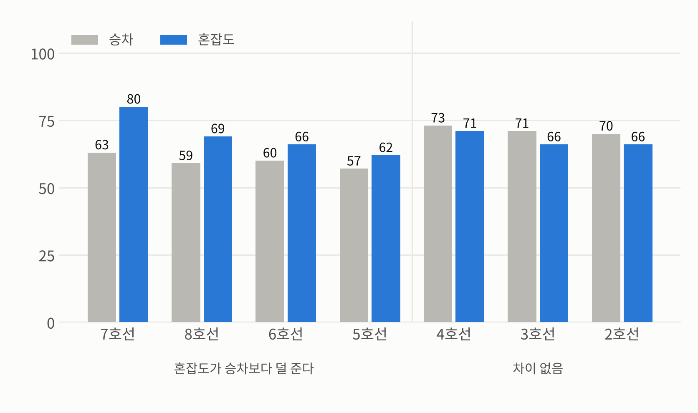
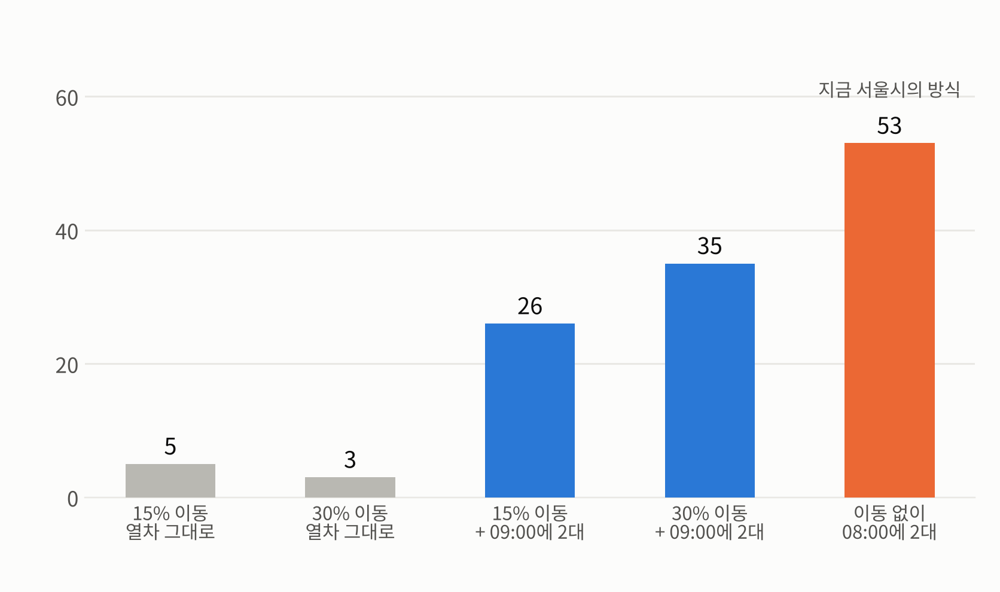

소셜 네트워크 과학 팀 프로젝트
150%를 달성한 뒤에
남은 혼잡
서울 지하철 출근길을 통근 네트워크로 다시 측정했습니다.
어디에 있는가
누가 겪는가
왜 남는가
기존 정책의 기준
지금의 기준은 노선별 최고 혼잡도 150% 하나다
수업 개념: 미시적 관점과 거시적 관점
| 항목 | 서울시와 서울교통공사가 밝힌 내용 |
|---|---|
| 목표 | 열차 혼잡도를 150% 이하로 관리한다 |
| 대상 선정 | 혼잡도가 150%를 넘는 노선 (4·7·9호선) |
| 수단 | 예비열차로 출퇴근 시간대 증회 5차례 (2023-04 ~ 2025-03), 신규 전동차 증차 (2027년까지) |
| 성과 지표 | 그 노선의 최고 혼잡도. 예: 4호선 186% → 167%, 7호선 161% → 148% (2023-10 증회의 기대 효과) |
| 단계 구분 | 안내용 4단계는 130%부터 “주의”. 현행 관리 기준은 150% 이하가 “보통” |
150%는 정원 160명인 칸에 240명이 탄 상태입니다.
이 기준은 노선마다 엣지 하나의 최댓값만 봅니다. 미시적 지표입니다. 그 엣지를 누가 지나는지, 이웃한 시간 칸이 어떤지는 보지 않습니다.
서울시 교통분야 누리집(지하철 혼잡도 완화 대책), 서울교통공사 보도자료(2023-10, 2024-04), 서울신문(2026-09-02).
문제 정의
150% 이상은 사라졌고, 130% 이상 22개가 남았다
평일 08:00 칸에서 150% 이상인 구간은 2022-12에 12개, 2024-06 이후로는 한 분기를 빼면 0개입니다.
130% 이상 구간은 2026-09 기준 22개입니다. 지금 기준으로는 모두 “보통”입니다.
아침 통행의 28%가 이 22개 중 하나 이상을 지납니다.
이 22개를 병목으로 정의합니다. 정책의 실패가 아니라, 기준이 보지 않는 곳입니다.

평일 08:00~08:30, 역·방향 기준. 서울교통공사 지하철 혼잡도 13개 시점. 130%는 안내용 4단계에서 “주의”가 시작되는 값.
자료와 망
두 개의 망을 겹쳐서 본다
수업 개념: Directed · Weighted Network, 시간 네트워크
| 운행망 (아래) | 통행망 (위) | |
|---|---|---|
| 노드 | 역 619개 (노선별로는 1,994개) | 같은 역 |
| 엣지 | 선로와 환승. 방향 있음 | 역 쌍 사이의 통행. 방향 있음 |
| 가중치 | 소요 시간 (환승은 5분) | 아침 통행량 (07~10시, 214만 건 추정) |
| 쓰임 | 통행을 최단 시간 경로에 실어 엣지 부하를 만든다 | 실측 혼잡도와 맞춰 본다 |
| 새로 정의한 용어 | 정의 |
|---|---|
| 병목의 손잡이 | 병목 엣지를 지나는 통행의 출발역과 도착역 중 더 몰린 쪽 |
| 순효과 | 사람을 옮겼을 때 떠난 칸과 도착한 칸을 합친 변화 |
혼잡도는 30분 칸 × 13개 시점이 있어 시간에 따라 가중치가 바뀌는 네트워크이기도 하다. 혼잡도 = 승객 ÷ (열차 수 × 정원).
첫 번째 발견 · 어디에 있는가
불균등은 연결이 아니라 가중치에 있다
수업 개념: degree 분포(CCDF), heavy-tailed, 가중 indegree · outdegree
운행망의 degree 분포는 heavy-tailed가 아닙니다. 역 619개 중 78%가 degree 2, 평균 2.31, 최대 9입니다.
가중치를 넣으면 달라집니다. 도착 상위 10% 역이 아침 도착의 48%를, 출발 상위 10% 역이 출발의 34%를 차지합니다.
지니 계수는 degree 0.15, 출발 0.50, 도착 0.62입니다.
도착이 출발보다 더 쏠려 있습니다. 이 비대칭이 병목의 방향을 정합니다.

역 단위 운행망(환승역은 한 노드)과 아침 통행 추정. 가로축은 평균으로 나눈 값.
구조 대 통행
연결 구조는 병목을 맞히지 못하고, 통행 총량은 맞힌다
수업 개념: 매개 중심성, configuration model 방식의 null model
매개 중심성을 엣지에 적용한 값은 실측 혼잡도와 순위상관 0.41, 상위 30개 구간 중 3개만 맞힙니다.
실제 통행량으로 가중하면 0.79, 18개입니다.
null model: 역별 승차·하차 총량은 지키고 역 사이 통행은 거리로만 다시 나눴습니다. 이 망의 엣지 부하는 실제 통행과 순위상관 0.98입니다.
병목의 위치는 노드의 총량이 정합니다. 누가 지나는지는 null model이 알려 주지 못합니다.

관측 구간 526개, 평일 08:00 칸. 세로축: 실측 혼잡도 상위 30개 구간 중 맞힌 수. 용량으로 나눈 값으로는 구조만 2개(0.33), 통행 15개(0.86).
두 번째 발견
병목은 서로 떨어진 작은 컴포넌트들이다
수업 개념: 컴포넌트, giant component, 컴포넌트 분포, 중시적 구조
| 혼잡도 문턱 | 남는 엣지 | 컴포넌트 수 | 가장 큰 컴포넌트의 엣지 수 |
|---|---|---|---|
| 150% 이상 | 0 | 0 | 0 |
| 140% 이상 | 8 | 4 | 3 |
| 130% 이상 | 23 | 9 | 4 |
| 120% 이상 | 40 | 12 | 6 |
| 100% 이상 | 90 | 12 | 23 |
| 80% 이상 | 170 | 4 | 163 (giant component) |
130%에서 병목은 컴포넌트 9개로 흩어져 있습니다. 큰 6개를 병목 통로라고 부릅니다. 나머지 3개는 엣지 1~2개짜리입니다(신도림, 내방, 송파).
병목은 망 전체의 현상이 아니라 중시적 구조입니다. 떨어져 있으므로 통로마다 따로 개입할 수 있습니다. 13개 시점 모두 컴포넌트 4~9개, 가장 큰 것이 엣지 3~8개입니다.
2026-09 평일 08:00 칸. 혼잡도가 문턱 이상인 엣지만 남긴 부분망, 환승역은 한 노드. 엣지 23개는 갈라지는 역(신도림)의 중복 1개 포함.
세 번째 발견
병목에는 손잡이가 있고, 통로마다 반대편이다
새 용어: 병목의 손잡이
통로의 엣지를 지나는 통행만 뽑아 출발역 쪽과 도착역 쪽의 집중도를 비교했습니다.
병목 22개 중 14개는 출발 쪽, 6개는 도착 쪽이 좁고 2개는 비슷합니다.
4호선 통로는 승객의 47%가 쌍문·수유·길음·미아사거리·상계에서 탑니다. 2호선 통로는 47%가 선릉·역삼·강남·삼성·교대에서 내립니다.
강남권 도착역만 겨냥하는 정책은 2호선에는 맞고 4호선에는 닿지 않습니다.

병목 통행 중 상위 5개 역의 비중(%). 7호선 중곡→건대입구는 30% 대 29%로 손잡이가 약하다(1.15배 문턱으로는 “비슷”).
네 번째 발견
개입은 되돌아온다: 옮겨 갈 칸이 비어 있어야 풀린다
수업 개념: 고른 곳을 건드리는 것과 고르게 건드리는 것의 비교
좁은 쪽 역 이용자의 15%(아침 통행의 2.5%)를 옮기면 08:00 칸 과밀이 27.5% 줄어듭니다. 모든 역에서 고르게 옮기면 13.2%입니다.
도착하는 09:00 칸까지 합치면 11%입니다. 두 배로 옮겨도 11%입니다. 09:00 칸은 열차가 줄어 이미 차 있습니다.
09:00 칸의 열차를 08:00 수준으로 두면 32%, 병목 통로 여섯 곳에서만 그렇게 해도 25%입니다.
제약은 옮기는 사람의 수가 아니라 받는 칸의 용량입니다.

과밀 감소(%). 09:30 칸까지 밀면 지금 열차로도 −26%지만 출근을 한 시간 반 늦추는 일이다.
다섯 번째 발견 · 누가 겪는가
혼잡은 노드가 아니라 경로의 속성이다
수업 개념: 가중 indegree · outdegree, 노드 지표 대 경로
출근 경로의 평균 혼잡도는 집값 하위 8개 구 91%, 상위 8개 구 67%입니다. 집값과 순위상관 −0.67 (순열 검정 p 0.0003, 붓스트랩 −0.85 ~ −0.37).
더 잘 설명하는 것은 유입/유출 비입니다. −0.81, 집값을 통제해도 −0.76. 거꾸로 통제하면 집값은 −0.57입니다.
노드로 재면 사라집니다. 그 구의 역이 정원을 넘는 시간은 집값과 −0.09입니다.
혼잡은 사는 곳이 아니라 지나는 길에 있습니다. 집값은 원인이 아닙니다.

서울 25개 구, 2026-09 평일. 집값은 아파트 3.3㎡당 실거래 중위값이며 개인 소득이 아니다. 13개 시점 모두 같은 방향.
통근망에서의 위치
병목은 나가는 구에서 들어오는 구로 가는 연결 위에 있다
수업 개념: PageRank
| 병목을 지나는 통행의 비율 | → 집값 하위 8개 구 | → 중간 9개 구 | → 상위 8개 구 |
|---|---|---|---|
| 하위 8개 구에서 출발 | 13% | 55% | 83% |
| 중간 9개 구에서 출발 | 6% | 11% | 36% |
| 상위 8개 구에서 출발 | 7% | 6% | 19% |
25개 구의 최대 통근 목적지는 중구 11곳, 강남구 9곳입니다. 순유출 구 15개 중에 집값 하위 8개 구의 7개가 들어 있습니다. 들어오는 통행을 표로 세는 PageRank는 집값과 +0.67, 평균 혼잡도와 −0.75입니다.
하위 → 상위 통행은 전체의 14%인데 과밀의 41%를 집니다. 집값은 노드의 속성, 혼잡은 경로의 속성이고, 둘 다 통근망에서의 위치를 따라갑니다.
아침 통행 추정, 서울 25개 구. 병목 = 경로에 130% 이상 엣지가 하나 이상 있는 통행.
여섯 번째 발견 · 왜 남는가
증회는 정점 한 칸만 내렸다
수업 개념: 대조군
2024년 상반기에는 4호선에만 열차를 더 넣었고, 4호선만 08:00 칸이 24.6%p 내려갔습니다. 나머지 노선은 0.5%p입니다.
2023년에도 증회한 5개 노선은 −8.0%p, 하지 않은 2개 노선은 +1.7%p입니다. 다만 2022년 말이 유난히 높았던 때라 평균 회귀가 섞였을 수 있습니다.
같은 노선의 09:00 칸은 −0.4%p입니다. 4호선 통로는 08:00이 180 → 135%가 되는 동안 09:00은 105 → 103%였습니다.
정책은 최댓값을 겨냥했고, 최댓값만 움직였습니다.

4호선 성신여대입구→동대문 통로의 혼잡도(%). 증회는 서울시가 발표한 출퇴근 시간대 증회 기준. 노선이 7개라 통계 검정은 하지 않았다.
일곱 번째 발견
정점 앞뒤의 혼잡은 시간표가 만든다
수업 개념: 엣지 가중치를 흐름과 용량으로 분해
혼잡도 = 흐름 ÷ 용량입니다. 병목 구간의 흐름은 08:00을 100으로 할 때 09:00에 62인데, 혼잡도는 137%에서 108%까지만 내려갑니다.
그 사이 열차가 30분당 9.0대에서 7.2대로 줄어듭니다. 공식 운행 간격도 4·7호선은 출근 2.5분에서 평시 5.5~6분으로 넓어집니다.
09:00 칸에 정원을 넘는 23개 구간은 예외 없이 08:00보다 흐름도 용량도 적습니다. 용량을 유지하면 119% → 84%입니다.
5~8호선, 특히 7호선입니다. 7호선 통로는 07:30, 08:00, 09:00이 모두 138~143%입니다.

08:00 칸 = 100. 열차 수는 시간표에서 센 값. 2026-11-24 실측에서 09:30 칸은 통로 5곳 중 4곳이 시간표와 같았다(3호선 1대 차이). 2호선과 저녁은 제외.
제안
사람만 옮겨서는 풀리지 않는다.
열차 감축을 늦춰야 옮긴 사람이 풀린다
전제
정점 증회는 계속한다
여전히 가장 효과가 큽니다. 4·7호선 08:00에 2대는 −53%입니다.
1 · 기준
정점 앞뒤 칸을 같이 본다
엣지 하나의 최댓값이 아니라 이웃한 시간 칸을 봅니다.
2 · 처방
병목 통로의 열차 감축을 늦춘다
30~60분, 통로 여섯 곳에서 30분당 평균 2대. 새 차량이 필요 없습니다.
3 · 보조
시차 출근은 그 통로의 손잡이에
사람만 옮기면 −11%, 통로의 열차를 유지하면 −25%입니다.
15% 이동은 가정이다(해외 사례 1.5~8%). 주장하는 것은 크기가 아니라 순서다: 받는 칸을 먼저 연다.
한계와 재현
먼저 말해 두는 것
통행 자료는 하루치다
다른 통행 자료로 다시 해도 구별 결과가 순위상관 0.95 이상입니다.
열차 수는 시간표에서 센 값이다
2호선과 저녁은 별도 자료와 맞지 않아 결론에서 뺐습니다.
노선 비교는 표본이 7개다
검정하지 않았습니다. 4호선 2024년 상반기를 주 근거로 둡니다.
감축을 늦추는 비용은 모른다
30분 단위 실제 운행 횟수와 승무 편성 자료의 공개가 필요합니다.
경로는 최단 시간 하나다
환승 시간을 3분에서 7분까지 바꿔도 결과가 유지됩니다.
다시 돌릴 수 있다
혼잡도 13개 시점 모두 같은 방향. 전체 계산은 노트북 하나입니다.
다시 150%
150%는 달성됐다. 그 뒤에 남은 혼잡은
어디에 있는가
망 전체가 아니라 서로 떨어진 컴포넌트, 통로 여섯 곳에 있다.
누가 겪는가
나가는 구에서 들어오는 구로 가는 사람들이, 사는 곳이 아니라 지나는 길에서 겪는다.
왜 남는가
정점이 아니라 정점 앞뒤에 있고, 그 앞뒤는 시간표가 만든다.
엣지 하나의 최댓값이라는 미시적 지표로는 이 셋 중 어느 것도 보이지 않는다.
부록
질문이 오면 띄울 장표
장별 수치 표, 민감도, 탈출 거리, 검증
부록 · 2장
실측 혼잡도를 누가 더 잘 맞히는가
| 망 | 실측과의 순위상관 | 실측 상위 30개 중 | 130% 이상 23개 중 |
|---|---|---|---|
| 구조만, 구간 부하 | 0.41 | 3개 | 3개 |
| 구조만, 부하 ÷ 용량 | 0.33 | 2개 | 1개 |
| 실제 통행, 구간 부하 | 0.79 | 18개 | 13개 |
| 실제 통행, 부하 ÷ 용량 | 0.86 | 15개 | 9개 |
| 대조 망(거리와 역 총량), 부하 ÷ 용량 | 0.86 | 15개 | 9개 |
구조만의 망은 모든 역 쌍에 같은 무게를 줍니다. 수업에서 배운 betweenness와 같은 생각입니다.
실제 통행의 구간 부하와 대조 망의 구간 부하는 순위상관 0.98입니다. 거리와 역별 승하차 총량만 알아도 병목을 같은 만큼 찾습니다.
관측 구간 526개, 08:00 칸. 용량 = 열차 수 × 정원. 130% 이상 23개는 지선 중복 1개를 포함한 수.
부록 · 3장
병목 통로 6개와 그 손잡이
| 통로 | 최고 혼잡도 | 출발 상위 5곳 | 도착 상위 5곳 | 좁은 쪽의 역 | 하위 8개 구 출발 | 서울 밖 출발 |
|---|---|---|---|---|---|---|
| 2호선 사당→교대 | 144.8% | 38% | 47% | 선릉·역삼·강남·삼성·교대 | 45% | 34% |
| 7호선 중곡→건대입구 | 143.6% | 30% | 29% | 상봉·사가정·면목·군자·하계 | 62% | 15% |
| 7호선 철산→가산디지털단지 | 145.5% | 54% | 36% | 철산·광명사거리·천왕·온수·신중동 | 17% | 82% |
| 8호선 천호→잠실 | 145.7% | 43% | 33% | 암사·천호·강동구청·암사역사공원·몽촌토성 | 1% | 33% |
| 4호선 성신여대입구→동대문 | 137.9% | 47% | 23% | 쌍문·수유·길음·미아사거리·상계 | 60% | 18% |
| 3호선 홍제→경복궁 | 135.9% | 46% | 30% | 연신내·녹번·삼송·홍제·구파발 | 40% | 46% |
굵은 쪽이 좁은 쪽입니다. 7호선 중곡→건대입구는 두 쪽이 거의 같아서(30% 대 29%) 손잡이가 약합니다.
병목을 지나는 아침 통행 기준. 구간 22개로 보면 출발 쪽 14개, 도착 쪽 6개, 비슷 2개.
부록 · 4장
어디를 겨냥하느냐, 그리고 어디로 옮기느냐
| 겨냥 | 옮기는 통행 | 08:00 칸 과밀 | 고르게 옮기면 | 강북 | 도봉 | 중랑 | 관악 |
|---|---|---|---|---|---|---|---|
| 강남권 도착역 5곳만 | 1.1% | −12.9% | −6.0% | −3% | −4% | −8% | −28% |
| 출발역만 | 1.5% | −16.7% | −8.0% | −37% | −36% | −22% | −2% |
| 통로마다 좁은 쪽 | 2.5% | −27.5% | −13.2% | −38% | −37% | −26% | −29% |
| 옮겨 가는 칸까지 세면 | 표적의 15% 이동 | 표적의 30% 이동 |
|---|---|---|
| 08:00 칸만 봄 | −29% | −52% |
| 09:00 칸으로, 지금 열차 | −11% | −11% |
| 09:00 칸으로, 08:00의 열차 수 유지 | −32% | −45% |
| 09:30 칸으로, 지금 열차 | −26% | −38% |
| 08:30 칸으로, 지금 열차 | −6% | −1% |
위 표는 통행 모형의 08:00 칸 과밀(−27.5%), 아래 표는 혼잡도 × 열차 수로 되살린 승객 기준(−29%). 기준이 달라 값이 조금 다르다.
부록 · 4장 민감도
판정 규칙과 열차 유지 범위를 바꿔도 결론은 같다
| 손잡이가 약한 7호선 중곡 통로 | 옮기는 통행 | 08:00 과밀 | 고르게 옮기면 | 순효과 (지금 열차) | 열차 유지 |
|---|---|---|---|---|---|
| 큰 쪽(출발)을 겨냥 (본문) | 2.48% | −27.5% | −13.2% | −11% | −32% |
| 겨냥에서 뺌 | 2.21% | −24.8% | −11.8% | −11% | −30% |
| 양쪽 다 겨냥 | 2.84% | −31.8% | −15.1% | −12% | −36% |
| 09:00 열차를 유지하는 범위 | 이동 없이 | 표적 15% 이동 | 표적 30% 이동 |
|---|---|---|---|
| 유지 없음 | 0% | −11% | −11% |
| 병목 통로 6곳만 (엣지 17개) | −8% | −25% | −31% |
| 09:00 정원 초과 구간만 (23개) | −13% | −31% | −39% |
| 전 구간 | −13% | −32% | −45% |
08:00과 09:00 두 칸 합계, 전체 관측 구간 기준. 통로 6곳에서 09:00 칸에 더 필요한 열차는 30분당 평균 2.1대.
부록 · 5장
같은 결과가 여러 방법에서 나온다
| 확인 | 결과 |
|---|---|
| 집값과 평균 혼잡도 | 순위상관 −0.67. 순열 검정 p 0.0003, 붓스트랩 95% 구간 −0.85 ~ −0.37, 한 구씩 빼면 −0.72 ~ −0.63 |
| 유입/유출 비와 평균 혼잡도 | 순위상관 −0.81. 붓스트랩 95% 구간 −0.93 ~ −0.58. 집값을 통제해도 −0.76 |
| 집값만의 몫 | 유입/유출 비를 통제하면 −0.57, 붐비는 방향 비율을 통제하면 −0.40으로 약해진다 |
| 역 단위 (서울 안 273개 역) | 유입/유출 비와 −0.63. 5분위별 평균 노출 85 · 80 · 76 · 66 · 56%. 같은 구 안에서는 −0.15로 약하다 |
| 혼잡도 13개 시점 | 집값 −0.75 ~ −0.60, 유입/유출 비 −0.84 ~ −0.78. 모든 시점에서 같은 방향 |
| 다른 통행 자료 (합성 6·7·8월) | 집값 −0.72. 구별 노출이 실제 OD 결과와 순위상관 0.95 ~ 0.96 |
평균 혼잡도 = 그 구 출근자가 지나는 관측 구간의 혼잡도를 통과 시간으로 가중 평균한 값. 하위 8개 구 91%, 상위 8개 구 67%.
부록 · 5장
탈출 거리: 시간을 옮겨 피할 수 있는가
| 집단 | 정원 초과 구간을 지남 | 130% 이상 구간을 지남 | 30분 옮겨 피함 | 60분 안으로 늦춰 피함 | 평균 탈출 거리 |
|---|---|---|---|---|---|
| 집값 하위 8개 구 | 56% | 29% | 38% | 41% | 64분 |
| 중간 9개 구 | 31% | 10% | 65% | 71% | 46분 |
| 상위 8개 구 | 26% | 9% | 57% | 59% | 54분 |
| 서울 밖 | 44% | 23% | 47% | 61% | 55분 |
| 문턱을 바꾸면 (하위 / 중간 / 상위) | 그 문턱 이상 구간을 지남 | 30분 옮겨 피함 |
|---|---|---|
| 100% (정원) | 64 / 43 / 42% | 27 / 66 / 67% |
| 110% | 55 / 34 / 29% | 27 / 66 / 67% |
| 120% | 54 / 31 / 16% | 34 / 72 / 47% |
| 130% | 52 / 17 / 13% | 91 / 93 / 63% |
위 표: 합성 통행의 실제 탑승 시각 기준. 아래 표: 같은 통행이 모든 출발 칸에 있다고 둔 계산.
부록 · 6장
증회한 노선만 08:00 칸이 내려갔다
| 노선 | 붐비는 방향 구간 | 2023년 아침 증회 | 08:00 칸 (2022-12 → 2023-12) | 09:00 칸 | 2024년 상반기 08:00 칸 |
|---|---|---|---|---|---|
| 4호선 | 9개 | 4회 | −15%p (160 → 145) | −1 | −25%p (4회 더 증회) |
| 3호선 | 10개 | 4회 | −8%p (132 → 124) | 0 | −3%p |
| 7호선 | 20개 | 2회 | −8%p (131 → 123) | +1 | 0%p |
| 2호선 | 21개 | 4회 | −5%p (122 → 116) | −4 | +2%p |
| 5호선 | 10개 | 4회 | −4%p (117 → 113) | +1 | −1%p |
| 6호선 | 4개 | 없음 | 0%p (104 → 105) | +1 | −3%p |
| 8호선 | 12개 | 없음 | +3%p (111 → 114) | +4 | +3%p |
증회한 5개 노선 평균 −8.0%p, 안 한 2개 노선 +1.7%p. 09:00 칸은 −0.4 대 +2.2로 어느 쪽도 그대로입니다. 같은 기간 07~09시 승차는 4호선 +2.1%, 7호선 −0.7%, 나머지 노선 +0.7%였습니다.
붐비는 방향 구간 = 13개 시점 모두 관측되고 08:00 칸 평균 혼잡도가 100% 이상인 구간. 증회 횟수는 서울시 발표 기준.
부록 · 6장
병목 통로의 앞뒤 칸은 내려가지 않았다
| 통로 | 시점 | 07:30 | 08:00 | 08:30 | 09:00 |
|---|---|---|---|---|---|
| 4호선 성신여대입구→동대문 | 2022-12 | 118% | 180% | 132% | 105% |
| 2026-09 | 121% | 135% | 118% | 103% | |
| 7호선 중곡→건대입구 | 2022-12 | 137% | 160% | 124% | 134% |
| 2026-09 | 141% | 143% | 116% | 138% | |
| 8호선 천호→잠실 | 2022-12 | 101% | 131% | 109% | 96% |
| 2026-09 | 138% | 142% | 134% | 123% | |
| 3호선 홍제→경복궁 | 2022-12 | 113% | 154% | 108% | 87% |
| 2026-09 | 108% | 135% | 100% | 80% |
7호선은 지금 07:30, 08:00, 09:00이 138~143%로 같은 높이입니다. 08:00에만 더 넣어서는 최고 혼잡도가 내려가지 않습니다. 8호선은 증회가 없었고, 별내선 개통(2024-08) 뒤 모든 칸이 올랐습니다.
통로 세 구간의 평균 혼잡도. 서울교통공사 지하철 혼잡도.
부록 · 6장
승객은 뾰족하게 몰리는데 혼잡도는 넓게 퍼진다
| 병목 구간 평균 | 07:00 | 07:30 | 08:00 | 08:30 | 09:00 | 09:30 |
|---|---|---|---|---|---|---|
| 혼잡도 | 95% | 119% | 137% | 116% | 108% | 81% |
| 열차 수 (30분당) | 6.5대 | 7.7대 | 9.0대 | 8.5대 | 7.2대 | 6.8대 |
| 승객 지수 (혼잡도 × 열차 수) | 49 | 73 | 100 | 80 | 62 | 43 |
| 이 계산이 맞는지: 별도 자료와 비교 | 08:00 | 08:30 | 09:00 | 09:30 |
|---|---|---|---|---|
| 합성 통행으로 직접 계산한 구간 부하 | 100 | 77 | 58 | 40 |
| 혼잡도 × 열차 수 | 100 | 81 | 62 | 44 |
| 혼잡도만 | 100 | 84 | 79 | 59 |
23개 구간 중 19개에서 혼잡도 × 열차 수가 합성 통행의 부하에 더 가깝습니다. 상류 역의 09시대 승차도 08시대의 48~54%로, 되살린 승객(44~59%)과 맞습니다.
혼잡도 = 승객 ÷ (열차 수 × 정원)이므로 혼잡도에 열차 수를 곱하면 승객 수가 된다. 열차 수는 시간표에서 센 값.
부록 · 6장
5~8호선은 승객이 줄어도 혼잡도가 덜 준다
09시대 승차는 08시대의 57~73%로 줄어듭니다.
5~8호선은 혼잡도가 그만큼 내려가지 않습니다. 7호선은 승차 63, 혼잡도 80입니다(13개 시점 모두).
2~4호선에는 이 차이가 없습니다.
감축 시각을 늦추는 처방은 5~8호선, 특히 7호선에 해당합니다.

09시대 ÷ 08시대(08시대 = 100), 혼잡도 13개 시점의 중앙값. 승차는 그 노선 전체 역.
부록 · 6장
같은 4·7호선 안에서: 정점이 먼저, 그 다음이 앞뒤 칸
08:00에 2대를 더 넣으면 과밀이 53% 줄어듭니다.
시차 출근만 유도하면 3~5%입니다.
옮겨 가는 09:00 칸에 2대를 같이 넣으면 26~35%입니다.
08:30과 09:00에 1대씩은 −19%, 09:00에 2대는 −12%입니다.

4·7호선 관측 구간, 08:00~09:30 과밀 감소(%). 시간표 집계는 08:00 칸 4호선 10대, 7호선 9대. 공식 출근 간격은 2.5분.
부록 · 6장
시차 출근만 유도하면 옮겨 간 칸이 넘친다
| 통로 | 열차 08:00 → 09:00 | 08:00 혼잡도 | 09:00 혼잡도 | 이동 뒤 09:00 (지금 열차) | 이동 뒤 09:00 (열차 유지) |
|---|---|---|---|---|---|
| 7호선 군자→어린이대공원 | 10 → 7대 | 144% | 140% | 170% | 119% |
| 8호선 강동구청→몽촌토성 | 7 → 5대 | 146% | 125% | 155% | 111% |
| 4호선 한성대입구→혜화 | 10 → 7대 | 138% | 105% | 135% | 94% |
| 7호선 철산→가산디지털단지 | 9 → 6대 | 146% | 96% | 129% | 86% |
| 3호선 홍제→무악재 | 8 → 7대 | 136% | 76% | 99% | 87% |
| 2호선 사당→방배 (판단 미룸) | 9 → 8대 | 145% | 136% | 160% | 142% |
08:00 칸 승객의 15%가 09:00 칸으로 옮겨 간다고 둔 계산입니다. 병목 전체로는 사람만 옮기면 −11%, 열차만 유지하면 −13%, 같이 하면 −32%입니다.
“열차 유지” = 09:00 칸에 08:00 칸의 열차 수를 넣은 경우. 열차 수는 시간표에서 센 값(±1대).
부록 · 검증
숫자를 세 번 다시 확인했다
| 검증 | 방법 | 결과 |
|---|---|---|
| 전체 재실행 | 노트북 전체(76개 셀)를 처음부터 실행 | 오류 0, 모든 값 일치 |
| 독립 재계산 | 망과 통행 모형 없이 혼잡도 원본의 역·방향 행만으로 6장 계산 | 같은 결론. 노선 비교 −8.3 대 +1.7, 4호선 −24.1 대 −0.4 |
| 가정 흔들기 | 환승 시간 180 · 300 · 420초 | 순위상관 −0.69 ~ −0.68, 순효과 −11% / −32 ~ −33% |
| 다른 시점 | 혼잡도 13개 시점 (2021-12 ~ 2026-09) | 5장 지표가 모든 시점에서 같은 방향 |
| 다른 통행 자료 | 합성 통행 (월별) | 구별 노출이 실제 OD 결과와 0.95 ~ 0.96 |
| 파일 원본 확인 | 서울 열린데이터광장 API와 대조 | 2025-11 파일 557행 전부 일치 |
재현: SNS_지하철_병목_전체_1124_v4.ipynb, v2.py, v3.py, q1~q4.py.